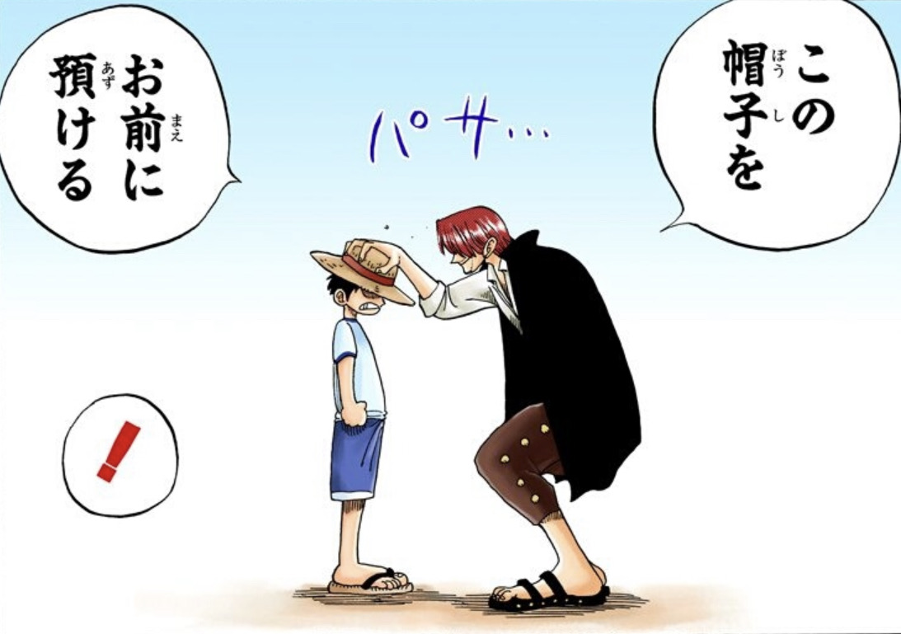
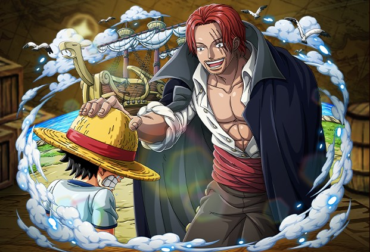
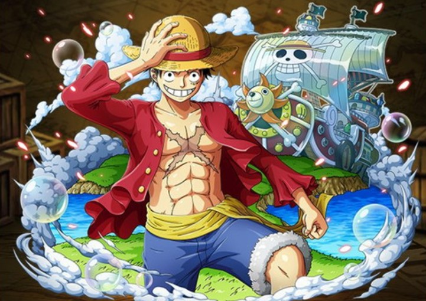

ワンピースの魅力
2022/7/20
今回は、まだ「ワンピース(ONE PIECE)」を見たことがない方へ、「ワンピース(ONE PIECE)」という作品が読みたくなるような魅力を紹介していきます。
1.はじめに
毎日何作品も漫画を見るほど漫画が好きな自分が、本当におもしろいと思った作品を、まだ読んだことのない人に知ってもらいたいと思ってこのサイトをつくりました。
自分が最初に「ワンピース(ONE PIECE)」を読んだのは小学2年生のころで、いとこの家に行ったときに本棚に全巻揃っていて、どんな内容の漫画なのか気になったのがきっかけでした。
「ワンピース(ONE PIECE)」は、子供が楽しめる内容である一方、大人が楽しめる内容でもあるのがすごいところです。
自分の友達に、つい最近まで「興味あるけど長い」と言っていた人がいたのですが、少し「ワンピース(ONE PIECE)」を読んだことで、ハマってくれたことがありました。
なので、興味があるけど読んでいない多くの人に少しでもいいから読んでもらいたいと思って紹介します。

2.作品詳細
「週刊少年ジャンプ」(集英社)の1997年34号より連載開始しており、いまもなお連載している大人気作品。
作者は「尾田栄一郎」。
2022年4月時点で第102巻まで刊行されていて、全世界でのシリーズ累計発行部数は4億9000万部を突破。
2015年6月15日には「最も多く発行された単一作者によるコミックシリーズ」としてギネス世界記録にも認定された。
3.あらすじ
▼ 簡潔版あらすじ
主人公「モンキー・D・ルフィ」という少年が、海賊王を夢見て「ひとつなぎの大秘宝”ワンピース”」を目指す物語。
物語はこの世の全てを手に入れた「海賊王」ゴールド・ロジャーの死に際に放った言葉からはじまる。
「おれの財宝か？欲しけりゃくれてやるぜ…」
「探してみろ この世の全てをそこに置いてきた」
ロジャーが遺した「ひとつなぎの大秘宝”ワンピース”」をめぐり、世界中の海賊たちが覇権を賭けて争う「大海賊時代」がはじまる。

東の海(イーストブルー)」にある「フーシャ村」に住むモンキー・D・ルフィ(当時7歳)は、村に滞在していた海賊「”赤髪の”シャンクス」に影響を受け、海賊になることを志す。
ある日、ルフィは「ゴムゴムの実」という”悪魔の実”を食べてしまい、全身ゴム人間になってしまった。

ある出来事により、ルフィはシャンクスにとって大切な”麦わら帽子”を託されることとなり、”立派な海賊になって再会し、麦わら帽子を返す”ことを約束する。

その10年後、修行をして身体を鍛えたルフィは、海賊の仲間(クルー)を集めるべく海へ冒険に出る。

4.キャラ紹介

ゴール・D・ロジャー
世界で初めて”偉大なる航路(グランドライン)”を制覇し、「ひとつなぎの大秘宝”ワンピース”」を手に入れた海賊王。世間では「ゴールド・ロジャー」と呼ばれている。

シャンクス
ルフィの命の恩人。左目に3本傷がある。世間では「赤髪」と呼ばれている。

モンキー・D・ルフィ
世界で初めて”偉大なる航路(グランドライン)”を制覇し、「ひとつなぎの大秘宝”ワンピース”」を手に入れた海賊王。世間では「ゴールド・ロジャー」と呼ばれている。

ゴール・D・ロジャー
世界で初めて”偉大なる航路(グランドライン)”を制覇し、「ひとつなぎの大秘宝”ワンピース”」を手に入れた海賊王。世間では「ゴールド・ロジャー」と呼ばれている。
ゴール・D・ロジャー
世界で初めて”偉大なる航路(グランドライン)”を制覇し、「ひとつなぎの大秘宝”ワンピース”」を手に入れた海賊王。世間では「ゴールド・ロジャー」と呼ばれている。
5.最後に
今回、「ワンピース(ONE PIECE)」という作品を紹介させてもらいました。
「ワンピース(ONE PIECE)」という作品は、男女・世代を問わず人気があるので、友達はもちろん、お父さんやお母さん・兄弟・姉妹とも楽しめるのが良さだと思っています。
「ワンピース(ONE PIECE)」を読んだことがない人は、ギャグシーンやバトルシーンだけなのではないかと思っているかもしれませんが、心に響く”名言”や涙が出るほどの感動シーンもあるので自分の目で確かめてもらいたいです。
また、読んでいるうちに「あの場面とこの場面がこうつながるのか」と驚かされることが多々あり、予想もしていなかった展開がくるとテンションが上がります。
そして、「ワンピース(ONE PIECE)」は”伏線”という後々のストーリーで重要となってくる言動や描写が多く出てくるので、考察をしながら読み進めることもできます。
考察はひとつの楽しみ方として覚えておいてもらえればいいかなと思います。
このサイトを見たことで、いままで読んだことがなかった人が読んでみたいと思ってくれたり、興味がなかった人が少しでもワンピースに興味を持ってくれたりしたらとてもうれしいです。
1000話以上も話数があるため、「読むのがめんどくさい」と思う人もいると思いますが、読みはじめると止まらなくなるので、ぜひ1度「ワンピース(ONE PIECE)」を読んでみてください。